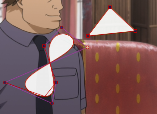

Narzędzia edycji wizualnej
Narzędzia edycji wizualnej
Postanowiłem parę rzeczy pozmieniać w porównaniu do Aegisuba, otóż w przypadku skali i obracania x i y można samemu wybrać co chcemy skalować / obracać co w nim jest niemożliwe. Gdy do wyboru jest kilka różnych opcji to można używać zarówno lewego, prawego jak i środkowego przycisku myszy, szczegóły zostaną opisane przy danej edycji wizualnej.
Wskaźnik pozycji i wyłącznik pozostałych narzędzi edycji wizualnej
Uruchamiamy ikoną  . Jest to domyślne narzędzie edycji wizualnej i wyłącza wszystkie pozostałem narzędzia. Wskazuje pozycję a także można nim pozycjonować, klikając środkowym przyciskiem myszy, bądź lewym przyciskiem myszy przytrzymując control. Można także skopiować koordynaty, korzystając z menu kontekstowego.
. Jest to domyślne narzędzie edycji wizualnej i wyłącza wszystkie pozostałem narzędzia. Wskazuje pozycję a także można nim pozycjonować, klikając środkowym przyciskiem myszy, bądź lewym przyciskiem myszy przytrzymując control. Można także skopiować koordynaty, korzystając z menu kontekstowego.
Pozycjonowanie 
Włączamy je, klikając na ikonę  . Pojawia się krzyżyk wskazujący pozycje wszystkich zaznaczonych widocznych na wideo linijek. Zmieniać pozycje zaznaczonych linii, należy kliknąć w wskaźnik, bądź jakiekolwiek inne miejsce i przesunąć do danej pozycji. Przytrzymanie shifta pozwala na przesuwanie tylko w jednej osi.
. Pojawia się krzyżyk wskazujący pozycje wszystkich zaznaczonych widocznych na wideo linijek. Zmieniać pozycje zaznaczonych linii, należy kliknąć w wskaźnik, bądź jakiekolwiek inne miejsce i przesunąć do danej pozycji. Przytrzymanie shifta pozwala na przesuwanie tylko w jednej osi.
(Ze względu na obsługę wielu linii usunąłem możliwość przesuwania tekstu po kliknięciu.)
Ruch
Włączamy, klikając na ikonę  . Pojawia się krzyżyk, kółko i kwadrat w pozycji edytowanej linijki, no chyba że linia już ma ruch, to kółko wskazuje pozycję końcową, a krzyżyk aktualną pozycję napisu. Klikając w kółko zmieniamy pozycję końcową (domyślnie gdy kółko i kwadrat nachodzą na siebie). Klikając w kwadrat zmieniamy pozycję początkową. Kliknięcie lewym przyciskiem w dowolne miejsce na ekranie ustawia tam pozycję początkową, a kliknięcie prawym ustawia pozycję końcową.
. Pojawia się krzyżyk, kółko i kwadrat w pozycji edytowanej linijki, no chyba że linia już ma ruch, to kółko wskazuje pozycję końcową, a krzyżyk aktualną pozycję napisu. Klikając w kółko zmieniamy pozycję końcową (domyślnie gdy kółko i kwadrat nachodzą na siebie). Klikając w kwadrat zmieniamy pozycję początkową. Kliknięcie lewym przyciskiem w dowolne miejsce na ekranie ustawia tam pozycję początkową, a kliknięcie prawym ustawia pozycję końcową.
W tagu wstawiany jest od razu czas początkowy i końcowy w milisekundach w taki sposób, by ruch zaczynał się od początku klatki i trwał do końca klatki. Można później nim łatwo ręcznie manipulować, gdy chcemy zrobić opóźnienie ruchu bądź zatrzymać go przed końcem.
Przytrzymanie shifta pozwala przesuwać punkt w jednej osi.
Zarówno pozycjonowanie, jak i ruch odnoszą się całej linijki, więc ustawienie kursora nie ma znaczenia.
Skalowanie 
Po włączeniu przyciskiem  pojawiają się trzy strzałki zaczynające się w pozycji edytowanej linijki. Edytować można przeciągając pionową dla skali Y, poziomą dla skali X i skośną dla obu skali. Można też kliknąć i przeciągać w dowolnym miejscu ekranu, lewy przycisk myszy przesuwa skalę X, prawy skalę Y, a środkowy obie skale. Skalowanie ustawia tagi w miejscu wskazania kursora, po przesunięciu kursora można edytować skalę dla następujących po nim liter aż do końca linijki bądź innego tagu skali.
pojawiają się trzy strzałki zaczynające się w pozycji edytowanej linijki. Edytować można przeciągając pionową dla skali Y, poziomą dla skali X i skośną dla obu skali. Można też kliknąć i przeciągać w dowolnym miejscu ekranu, lewy przycisk myszy przesuwa skalę X, prawy skalę Y, a środkowy obie skale. Skalowanie ustawia tagi w miejscu wskazania kursora, po przesunięciu kursora można edytować skalę dla następujących po nim liter aż do końca linijki bądź innego tagu skali.
Obracanie wokół osi Z
Po uruchomieniu przyciskiem  pojawia się koło według którego będziemy obracać tekst. Domyślnie zakotwiczone w miejscu pozycji linii, chyba że jest już dopisany punkt org, to wtedy jest ustawione w jego punkcie. Kliknięcie lewym przyciskiem myszy i przemieszczanie po ekranie pozwala na obracanie tekstu. Można także przenieść punkt org, klikając w środek kółka i przesuwając go w żądane miejsce. Tak samo, jak skalowanie, obracanie wstawia tag w miejscu ustawienia kursora.
pojawia się koło według którego będziemy obracać tekst. Domyślnie zakotwiczone w miejscu pozycji linii, chyba że jest już dopisany punkt org, to wtedy jest ustawione w jego punkcie. Kliknięcie lewym przyciskiem myszy i przemieszczanie po ekranie pozwala na obracanie tekstu. Można także przenieść punkt org, klikając w środek kółka i przesuwając go w żądane miejsce. Tak samo, jak skalowanie, obracanie wstawia tag w miejscu ustawienia kursora.
Obracanie wokół osi X i Y 
Po włączeniu przyciskiem pojawia się siatka wg której będziemy obracać tekst. Domyślnie zakotwiczone w miejscu pozycji linii, chyba że jest już dopisany punkt org, to wtedy jest ustawione w jego punkcie. Przytrzymując lewy przycisk obracamy wokół osi Y. Przytrzymując prawy przycisk myszy obracamy wokół osi X, a przytrzymując środkowy obracamy wokół obu osi. Obracanie wokół osi X i Y wstawia tagi w miejscu kursora.
Wycinki prostokątne
Po włączeniu przyciskiem wycinek ustalamy chwytając i przeciągając myszą do powstania wycinku w przybliżonej wielkości. Dodatkowo każdą czerwoną linię można przesunąć, tak by przysłonić właściwą ilość tekstu, w przypadku zmiany \clip na \iclip zamieniamy widoczny wycinek z niewidocznym. Wycinki prostokątne mogą być ustawione tylko raz na linijkę, pozycja kursora nie ma znaczenia są zawsze ustawiane na początku tekstu.
Wycinki i rysunki wektorowe
Wycinek wektorowy w formie gwiazdki.
Rysunek wektorowy w formie gwiazdki.
Tworzenie wycinków bądź rysunków włączamy z paska narzędzi umiejscowionego pod przyciskami wideo.
Po prawej stronie paska narzędzi zostaną wyświetlone ikony do obsługi wycinków i rysunków.
Na ekranie na początku nie widać, żadnych punktów, więc należy je stworzyć, domyślnie włączone zostaje
narzędzie do wstawiania linii można je oczywiście zmienić na krzywą Beziera gdy jest taka potrzeba.
Opis narzędzi:
Pozwala na przemieszczanie wcześniej postawionych punktów.
Tworzy nową linię połączoną z ostatnim punktem rysunku, jeśli go nie ma to ustawia pierwszy punkt rysunku.
Tworzy nową krzywą Beziera połączoną z ostatnim punktem rysunku, jeśli go nie ma to ustawia pierwszy punkt rysunku.
Tworzy nową krzywą b-sklejaną połączoną z ostatnim punktem rysunku, jeśli go nie ma to ustawia pierwszy punkt rysunku.
Krzywa ta zaczyna wstawia na początku 3 punkty bo to jest wymagane minimum. Powstała krzywa nie przecina się z punktami sterującymi tylko generowana jest wewnątrz figury powstałej z połączenia punktów. Dobra do wszystkich elips, okręgów.
Wstawia nowy osobny punkt "m" pozwalający rozpocząć tworzyć nową figurę.

Usuwa wskazany punkt.
Dodatkowo podobnie jak w Aegisubie można zaznaczać punkty, co pozwala przesuwać więcej punktów na raz.
Przytrzymanie shift pozwala na przesuwanie według jednej osi.
Przy pozycjonowaniu wyświetlane są różowe linie pomocnicze, by łatwiej ustawić różne punkty w podobnej pozycji.
Tworzenie rysunków odbywa się podobnie, tyle że tymczasowo ustawia cały tekst linijki jako komentarz, ponieważ powoduje on nieprzewidywalne przeskoki rysunku a także nie da się precyzyjnie obliczyć pozycji rysunku.
Zmieniacz pozycji
Narzędzie do zmiany pozycji tagów \pos, \move, \clip, \p i \org. Obsługuje zarówno wycinki prostokątne jak i wektorowe. Przesuwa wszystkie wybrane tagi w zaznaczonych linijkach. Z paska narzędzi można wybrać które tagi przesuwać.
Można wybrać kilka tagów jednocześnie. Działa tylko na istniejące tagi nie wstawia nowych.
Przesuwać można klikając w dowolne miejsce ekranu nawet gdy kursory położeń danych tagów są niewidoczne.
Zawiera on następujące przyciski:

Przesuwanie pozycji \pos.
Kursor - granatowy kwadrat z czerwoną obwódką.
Przesuwanie pozycji początkowej ruchu \move.
Kursor - granatowy kwadrat z czerwoną obwódką.
Przesuwanie pozycji końcowej ruchu \move.
Kursor - granatowe kółko z czerwoną obwódką.
Przesuwanie wycinków \clip, działa jednocześnie na oba typy, wycinki prostokątne i wektorowe.
Kursor - niebieski krzyżyk.
Przenoszenie rysunków wektorowych, używać tylko i wyłącznie gdy chcemy zmienić punkty rysunku, nie używać gdy mamy załączone pozycjonowanie, czy ruch w obu przypadkach. Normalnie rysunki możemy przemieszczać używając przesuwania pozycjonowania albo ruchu.
Kursor - różowy krzyżyk.
Przenoszenie kotwic \org, zapewnia, że wszelkie obracanie będzie działać poprawnie po przesunięciu.
Kursor - fioletowy krzyżyk.
Przykładowo zaznaczając wszystkie opcje oprócz rysunków można przemieścić całe karaoke, czy też całe sekwencje Mocha mając możliwość dopasowania do elementów widocznych na wideo. Ekwiwalent skryptu Position shifter.
Oczywiście jeśli ktoś ma jakieś propozycje odnośnie lepiej widocznych kursorów czy innych przydatnych zmian odnośnie tego narzędzia albo innych to może o tym napisać na forum albo w wiadomości prywatnej bądź w issues githuba.
Created with the Personal Edition of HelpNDoc: Generate EPub eBooks with ease